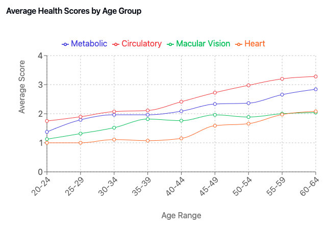
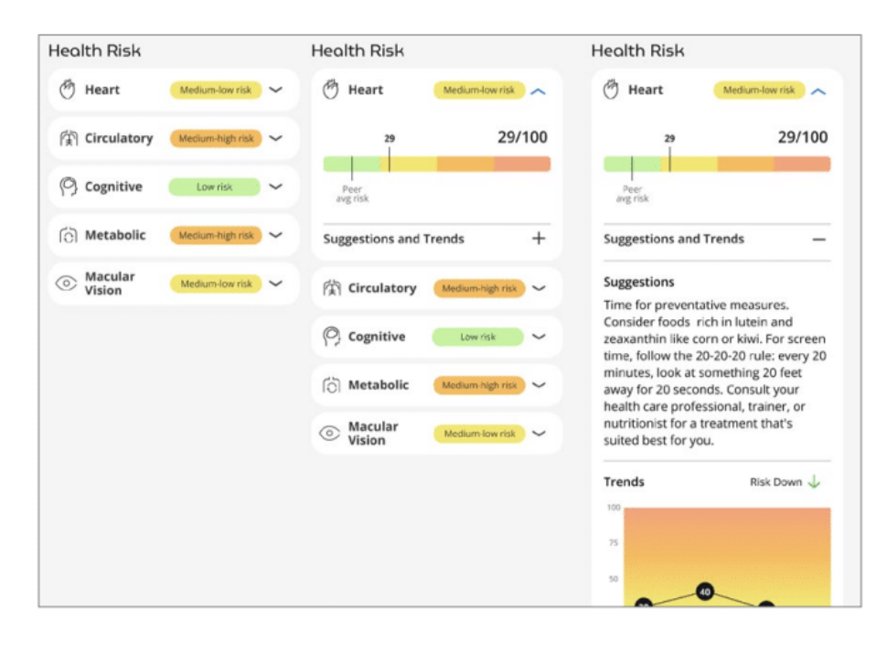
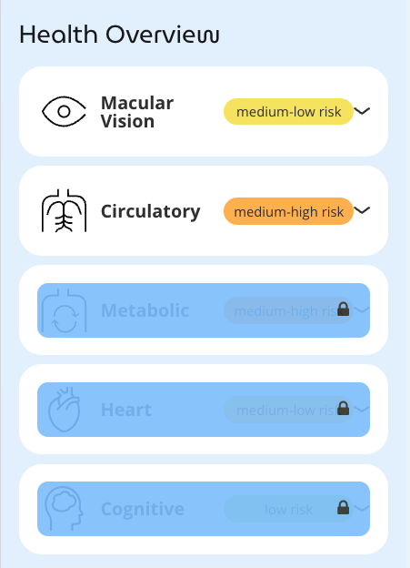

4 Opticare AI – Marrying Innovation with Wellness
In today’s fast-evolving health and wellness landscape, technology is transforming the way professionals assess, monitor, and improve patient health. At the forefront of this transformation is the Opticare AI fundus camera, an innovative tool that combines cutting-edge imaging technology with the power of artificial intelligence (AI). This chapter explores how Opticare AI bridges the gap between traditional wellness practices and state-of-the-art health assessment, enabling practitioners to elevate their services while enhancing patient outcomes.
The eye, often called the “window to the soul,” is also a window to health. By analyzing the retina, wellness professionals can gain insights into systemic health, offering a non-invasive, painless approach to health assessment. For practices seeking to attract tech-savvy, health-conscious clients, the Opticare AI camera is a game-changer.
4.1 Opticare AI – Health Reports and Analysis
The Opticare AI system transforms complex retinal data into actionable health insights through comprehensive reports that address multiple dimensions of health. This chapter explores each health metric in detail, explaining both the scientific foundation and practical implications for wellness practitioners.
Each Opticare AI report stems from sophisticated analysis of high-resolution fundus images, leveraging deep learning algorithms trained on millions of labeled retinal images. The reports are generated within minutes of imaging and provide insights into five key health dimensions:
- Macular Vision Health
- Circulatory Health
- Cognitive Health
- Metabolic Health
- Cardiovascular Health
The analysis begins immediately after image capture, with AI algorithms examining countless retinal features including vessel patterns, layer structures, and tissue characteristics. This multi-dimensional analysis allows for a comprehensive health assessment that extends far beyond traditional vision screening.

Report Structure and Presentation
Reports are designed for clarity and actionability, with each health dimension presented separately. Practitioners can choose to make certain reports optional, viewable only when unlocked, allowing for flexible service models and staged implementation. This feature is particularly valuable for mass screening events, where practitioners can offer one or two basic health reports at no cost as an incentive, while reserving comprehensive results for clients who book appointments or pay a small fee to unlock additional insights.
The visual design of Opticare reports prioritizes intuitive understanding through a straightforward risk categorization system. Health metrics are divided into four broad categories, each with distinct color coding:
- Low risk (green)
- Medium-low risk (yellow)
- Medium-high risk (orange)
- High risk (red)
This deliberate simplification serves multiple purposes. First, it acknowledges that AI-based health assessment is still an evolving science and avoids implying a precision that might be misleading. Second, it presents information in an easily digestible format that clients can quickly comprehend. Third, it facilitates productive conversations about health trends without creating undue anxiety over minor variations.
Each report includes:
- A summary score for the specific health dimension
- Detailed breakdown of contributing factors
- Comparative data showing where results fall relative to age-matched population norms
- Change indicators for returning clients, highlighting improvements or declines since previous assessments
- Suggested focus areas for further investigation or intervention
- Customizable recommendations that practitioners can tailor to their specific approach
Reports can be extensively customized to align with each practice’s approach and brand identity. Practitioners can add their logo, contact information, and even scheduling functionality to make it easy for clients to book follow-up appointments. The recommendation sections are particularly flexible, allowing practitioners to replace generic suggestions with specific guidance that reflects their unique approach—whether that involves nutritional strategies, supplement recommendations, or particular therapeutic modalities.
This structured approach allows practitioners to quickly grasp key insights while having access to deeper information when needed. The standardized format also facilitates comparison across time, enabling effective monitoring of changes in response to wellness interventions.
We must repeat over and over: the Opticare AI system is not currently authorized by the FDA to diagnose or treat any disease. The following discussions note the types of diagnosis that are theoretically possible using advanced AI-driven fundus photography, but the current Opticare AI system does not provide the diagnosis. It is critical that any health-related conclusions be made by a qualified professional.
4.2 Retinal Age Assessment
Building on the research discussed in Chapter 2, the retinal age assessment provides a powerful biomarker of biological aging derived from fundus imaging analysis. Opticare’s sophisticated AI algorithms evaluate numerous retinal characteristics to determine a “RetinalAge™” score that often differs from chronological age, offering valuable insights into overall health status and longevity potential.
Key Components of the Analysis:
- Detailed evaluation of retinal microvasculature patterns
- Assessment of vessel tortuosity and branching architecture
- Analysis of neural tissue integrity and organization
- Evaluation of pigment distribution and tissue density
- Comparison against extensive normative databases
The scientific foundation for retinal age assessment, as explored in Chapter 2, comes from landmark studies demonstrating strong correlations between retinal features and biological aging processes. Research from the Singapore Epidemiology of Eye Disease study and the UK Biobank has shown that retinal age gap (the difference between predicted retinal age and chronological age) serves as a significant predictor of mortality risk and health outcomes.
When the Opticare AI system generates a RetinalAge™ score, it’s not merely estimating how old the eyes appear, but rather evaluating how the entire body is aging as reflected through the retinal window. The retina’s unique properties—its shared embryological origins with brain tissue, its transparent nature allowing direct observation, and its rich microvasculature—make it an ideal tissue for assessing overall biological aging.
Understanding the Report:
The retinal age assessment provides several key metrics:
- Estimated biological age based on retinal characteristics
- Comparison to chronological age (retinal age gap)
- Percentile ranking compared to age-matched population
- Specific contributing factors that influence the score
- Trend analysis for returning clients
A RetinalAge™ score significantly lower than chronological age suggests healthy aging patterns and potentially reduced risk of age-related diseases. Conversely, a retinal age exceeding chronological age may indicate accelerated aging processes that warrant further investigation or lifestyle modifications.
Clinical Applications and Realistic Expectations:
It’s important for practitioners to understand and communicate that retinal structures generally show remarkable stability over time. Unlike some biomarkers that may show rapid improvement with intervention, retinal changes tend to be gradual and cumulative. The primary goal of wellness interventions, when viewed through the lens of retinal assessment, is often to slow or halt deterioration rather than reverse existing changes.
Practitioners can use the retinal age assessment to:
- Establish a baseline for monitoring future changes
- Identify areas where preventive measures may be most beneficial
- Track the rate of change over longer time periods
- Guide interventions that may prevent further deterioration
- Set realistic expectations for clients about monitoring outcomes
The Opticare assessment is particularly valuable for identifying the effects of previous lifestyle factors. For instance, former smokers will typically show permanent retinal changes that reflect past exposure. While these changes may not reverse, smoking cessation and other positive interventions can dramatically slow or halt further deterioration—a significant health achievement that should be celebrated even without improvement in absolute scores.

For returning clients, monitoring retinal age stability over time provides objective feedback about the effectiveness of wellness interventions. Success is often defined not by improvement in scores but by maintaining stability where deterioration would otherwise be expected. This represents a more realistic and scientifically sound approach to longitudinal monitoring.
The retinal age assessment represents one of the most powerful applications of AI-driven fundus photography, providing insights into aging processes that were previously accessible only through invasive testing or complex laboratory analyses. By offering this sophisticated metric in an accessible, non-invasive format, Opticare provides wellness practitioners with a valuable tool for establishing baselines, identifying risk factors, and monitoring the effectiveness of preventive interventions over time.
4.3 Macular Vision Health
Building on the research discussed in Chapter 2, the macular vision health score evaluates retinal structures critical for central vision. Skilled professionals can use the fundus images to evaluate:
- Assessment of macular integrity and potential age-related changes
- Analysis of retinal nerve fiber layer thickness
- Evaluation of drusen presence and characteristics
- Detection of potential vascular abnormalities
The scientific foundation for this metric comes from extensive studies linking retinal structural changes to both eye health and systemic conditions. As discussed in Chapter 2, research has demonstrated strong correlations between macular health and various systemic conditions, including:
- Age-related macular degeneration risk assessment
- Early detection of diabetic retinopathy patterns
- Identification of hypertensive retinopathy signs
Practitioners can use this information to:
- Guide preventive eye care recommendations
- Identify potential need for specialist referral
- Monitor effectiveness of current wellness interventions
The macular vision health report provides a comprehensive assessment of the central retina, highlighting both strengths and potential areas of concern. While avoiding specific diagnostic claims, it offers valuable insights that can guide wellness recommendations and highlight patterns that might warrant further investigation by vision specialists.
For example, the report might indicate subtle changes in macular structure that correlate with known risk factors for age-related vision changes. This information allows practitioners to discuss preventive measures such as nutritional interventions, blue light protection, or lifestyle modifications that support long-term eye health.
4.4 Circulatory Health
The circulatory health metric analyzes retinal vessel patterns, providing insights into systemic vascular health. This assessment includes:
- Vessel caliber measurements
- Arterial-to-venous ratio analysis
- Vessel tortuosity evaluation
- Microvascular pattern assessment
Drawing from research presented in Chapter 21 and subsequent studies, fundus images can reflect:
- Systemic vascular health status
- Potential cardiovascular risk factors
- Microcirculatory function
The scientific basis includes:
- Correlation studies between retinal vessel characteristics and systemic blood pressure
- Research linking vessel patterns to cardiovascular outcomes
- Studies demonstrating predictive value for various circulatory conditions
The circulatory health report provides a window into the body’s microvascular system, which often reflects broader vascular health trends. Practitioners can use this information to guide discussions about cardiovascular wellness strategies, including nutritional approaches, exercise recommendations, and stress management techniques that support healthy circulation.
For returning clients, tracking changes in vessel patterns over time can provide objective feedback about the effectiveness of wellness interventions. Improvements in retinal vessel characteristics often parallel broader improvements in vascular health, offering tangible evidence of positive change that can enhance client motivation and engagement.
4.5 Cognitive Health
The cognitive health assessment leverages emerging research linking retinal characteristics to neurological health. Key components include:
- Retinal nerve fiber layer analysis
- Vascular pattern evaluation
- Structural integrity assessment
Based on research discussed in Chapter 22, this metric considers:
- Neural tissue health indicators
- Vascular patterns associated with cognitive function
- Age-related changes in retinal structure
The scientific foundation includes:
- Studies linking retinal changes to cognitive decline
- Research on early markers of neurodegeneration
- Correlation studies between retinal structure and brain health
The cognitive health report provides valuable insights into potential neural health patterns while carefully avoiding specific diagnostic claims. This information can guide discussions about brain-healthy lifestyle practices, including cognitive stimulation activities, nutritional approaches that support neural function, and physical activities that promote brain health.
For practices focused on holistic wellness, the cognitive health report offers a unique opportunity to address an aspect of health that clients often find difficult to assess objectively. The ability to visualize and track neural health markers over time provides a tangible way to discuss cognitive wellness strategies that might otherwise seem abstract or difficult to measure.
4.6 Metabolic Health
The metabolic health score draws from extensive research linking retinal changes to metabolic function. This includes analysis of:
- Microvascular patterns
- Vessel wall characteristics
- Tissue perfusion indicators
Research support comes from:
- Studies on diabetic retinopathy patterns
- Research linking metabolic syndrome to retinal changes
- Investigations of insulin resistance markers in retinal tissue
The metabolic health report provides insights into patterns that correlate with metabolic function, offering a unique window into this critical aspect of wellness. Practitioners can use this information to guide discussions about nutritional strategies, physical activity recommendations, and other interventions that support metabolic health.
For practices focused on weight management, metabolic optimization, or sports performance, this report offers valuable information about how current strategies are affecting metabolic function at the microvascular level. This can be particularly valuable when working with clients who may not be seeing immediate changes in traditional metrics like weight or body composition but are making meaningful progress in terms of metabolic health.
4.7 Cardiovascular Health
Building on research presented in Chapter 23, this metric evaluates:
- Arterial characteristics
- Venous patterns
- Overall vascular health indicators
The scientific basis includes:
- Large-scale studies linking retinal patterns to cardiovascular outcomes
- Research on predictive value of vessel characteristics
- Long-term outcome studies
The cardiovascular health report provides a comprehensive assessment of patterns that correlate with heart health, complementing traditional cardiovascular risk assessments. This information can guide discussions about heart-healthy nutrition, appropriate physical activity, stress management, and other interventions that support cardiovascular wellness.
For practices that already incorporate other cardiovascular assessments, the Opticare report provides complementary information that often reflects earlier changes than might be detectable through traditional measures like blood pressure or cholesterol screening. This early-warning capability aligns perfectly with the preventive focus of wellness practice.

4.8 Practical Implementation
Interpreting Reports
Practitioners should approach these reports as conversation starters that complement other clinical findings rather than definitive diagnostic tools. This perspective aligns with Opticare’s philosophy (explored further in Chapter 6) that making advanced technology available now, even as the science continues to evolve, provides greater benefit than waiting for perfect validation.
Key considerations when interpreting reports include:
- Understanding normal variations
- Recognizing significant changes
- Identifying patterns requiring further investigation
- Contextualizing results within a client’s age range
- Prioritizing established clinical findings when contradictions arise
When interpreting Opticare reports, it’s essential to consider both absolute values and trends over time. Single measurements provide valuable baseline information, but the most meaningful insights often come from tracking changes across multiple assessments. Improvements or declines in specific metrics can help evaluate the effectiveness of wellness interventions and guide adjustments to treatment plans.
Age consideration is particularly important when interpreting results. The prevalence of health issues naturally increases with age, so risk indicators tend to follow predictable patterns across the lifespan. Younger clients in their twenties typically show predominantly “green” (low risk) results across categories, while clients in their sixties might commonly display more “orange” (medium-high risk) indicators without necessarily having acute health concerns. This age-related progression should be factored into discussions about results.
When Opticare results contradict other clinical findings, practitioners should prioritize established standards of care. For example, if a client’s HbA1c indicates metabolic issues but their Opticare metabolic health report shows low risk, the practitioner should follow standard protocols for addressing the elevated HbA1c. Conversely, if an Opticare report indicates medium-high cardiovascular risk in a client with normal cholesterol and blood pressure, practitioners should view this as a single data point that may warrant monitoring rather than immediate intervention. The technology should enhance, not replace, clinical judgment.
Context is critical when interpreting results. Factors like a client’s age, overall health status, medication use, and recent lifestyle changes can all influence retinal patterns. The Opticare AI system accounts for many of these factors, but professional judgment remains essential for proper interpretation.
While the system identifies patterns associated with various health dimensions, practitioners should maintain appropriate professional boundaries when discussing results. The focus should remain on wellness promotion and early identification of potential concerns rather than specific disease diagnosis. Consider the reports as the beginning of a health conversation rather than the final word on a client’s condition.
Client Communication
Effective communication about report findings includes:
- Clear explanation of metrics
- Context within overall wellness assessment
- Appropriate framing of results
- Integration with other clinical findings
When discussing Opticare reports with clients, visual aids can significantly enhance understanding. The reports themselves are designed with clear graphics that help clients grasp complex information quickly. Walking clients through each metric while explaining its significance in everyday terms helps build both understanding and trust.
Frame discussions in terms of wellness optimization rather than disease prediction. For example, rather than focusing on potential negative outcomes associated with certain patterns, emphasize positive steps clients can take to support their health in each dimension covered by the reports.
Connect Opticare findings with other aspects of your wellness assessment to create a coherent narrative about the client’s current health status and opportunities for improvement. This integrated approach helps clients see the value of comprehensive assessment and understand how various aspects of health interconnect.
Use the reports as a foundation for collaborative goal-setting. The visual nature of the metrics makes it easy to establish baseline measurements and set specific, measurable targets for improvement. This collaborative approach enhances client engagement and ownership of their wellness journey.
Follow-up Protocols
Establishing clear protocols for:
- Regular monitoring intervals
- Significant finding response
- Referral criteria
- Progress tracking
Develop standardized follow-up schedules based on initial findings. For example, clients with metrics in optimal ranges might benefit from annual reassessments, while those with patterns suggesting potential concerns might warrant more frequent monitoring, such as quarterly or semi-annual follow-ups.
Create clear guidelines for when findings warrant referral to other healthcare providers. While maintaining appropriate scope of practice, establish relationships with specialists who can provide more detailed evaluation when needed. Document your referral protocols to ensure consistent, appropriate care across all clients.
Implement systematic progress tracking that allows for easy visualization of changes over time. This might include graphical representations of key metrics across multiple assessments, highlighting improvements and areas requiring continued attention.
Use follow-up appointments to reinforce positive changes and address challenges. Review previous recommendations, assess compliance, and adjust wellness plans based on both subjective feedback and objective changes in retinal patterns.
4.9 Integration with Practice Philosophy
The Opticare AI system aligns with the philosophy that technology often moves faster than traditional scientific validation processes—a concept explored in greater detail in Chapter 6. This forward-thinking approach recognizes that waiting for complete scientific consensus before adopting potentially beneficial technologies may delay valuable care opportunities.
When integrating Opticare reports into your practice philosophy, consider them as innovative tools that provide unique insights rather than definitive diagnostic instruments. Their greatest value often lies in their ability to:
- Initiate meaningful health conversations with clients
- Provide visual representation of otherwise abstract health concepts
- Track subtle changes that might not be captured by traditional assessments
- Offer early indications of potential concerns before they manifest as clinical symptoms
- Enhance client engagement through technologically advanced yet accessible assessment
This approach acknowledges both the potential and limitations of AI-based fundus camera health assessment while maximizing its value within a comprehensive wellness practice. By positioning the technology as one component of a multifaceted assessment strategy, practitioners can leverage its capabilities while maintaining appropriate professional perspective.
4.10 Conclusion
Opticare AI health reports provide a sophisticated yet accessible way to leverage retinal imaging for comprehensive health assessment. By understanding both the scientific foundation and practical application of these metrics, practitioners can effectively integrate this technology into their wellness practice while maintaining appropriate professional boundaries.
Treating the reports as “the start of a conversation, not the end” captures the essence of their proper implementation. This perspective recognizes that AI-based fundus camera health assessment continues to evolve, with practitioners and clients alike benefiting from access to cutting-edge technology even as the science develops further.
The next chapter will explore practical applications of the Opticare system in various clinical settings, building on this understanding of the health metrics and their significance.
Opticare AI reports stem from the device’s high-resolution fundus imaging capabilities combined with deep learning algorithms. The reports are generated quickly after the imaging process and summarize a patient’s potential health risks in areas such as circulatory, cognitive, metabolic, and cardiovascular health, as well as specific eye-related health markers. The technology’s focus on ease, speed, and comprehensive metrics ensures these reports are both actionable and accessible for health and wellness professionals.

